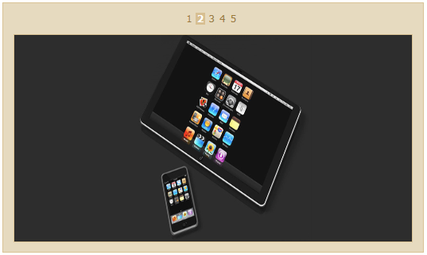

The Rotator Control allows you to set the navigation type so that you can customize how you navigate through the items.
You can either have it set so that-
1. The items automatically scroll with a fixed time interval (AutoPlay)
2. Using a button mode that allows you to scroll through the items when you click the arrow buttons (ButtonMode)
3. Using a pager-mode so that you can select the page that you would like to view( PagerMode)
Properties for Navigation type
|
Name |
Description |
Type of property |
Value it accepts |
Dependency |
|
Navigation type |
This property helps you to navigate among items, using AutoPlay or ButtonMode |
enum |
· NavigationType.AutoPlay · NavigationType.ButtonMode · NavigationType.PagerMode
Default Value is AutoPlay |
NA |
Properties for the PagerMode navigation type
|
Name |
Description |
Type of property |
Value it accepts |
Dependency |
|
PageSetting |
This property is applicable
only when you set the navigation type as pager mode. When you do so, all
the other settings get overriden, since they are not applicable to the
pager mode.
|
Action <IRotatorPageBuilder> |
NA |
Depends on NavigationType.PagerMode – this property is only applicable for the Pager mode navigation type. |
|
AllowPaging |
This property allows to to
disable the pager mode in case you do not want it. |
bool |
· True · False Default value is True |
This is part of the PageSetting property—only when the NavigationType.PagerMode is enabled, this property is applicable |
|
PagerStyle |
In the Numeric pager mode, you will have to select the page of the rotator that you want to view. |
PagerStyles enum |
· PagerStyles.Numeric · PagerStyles.Slider Default value is PagerStyles.Numeric
|
This is part of the PageSetting property—only when the NavigationType.PagerMode is enabled, this property is applicable |
|
PageCount |
This property is applicable only for the Numeric Pager style. It allows you to specify the
number of pages that you would like to have in the rotator control.
|
int |
Any integer There is no default value. |
Only when the NavigationType.PagerMode is enabled, the
PageSetting property is applicable. |
|
SliderSize |
This property is applicable only for the Slider pager style. It allows you to scroll
through the items in the rotator, with the help of a slider. |
int |
Any integer value. Default value is 50 (measured in pixels) |
Only when the NavigationType.PagerMode is enabled, the
PageSetting property is applicable. |
In both the AutoPlay and the Button mode navigation types, you can set the number of items to be displayed during a single view, without scrolling.
For the Pager mode, however, you can have only one item on one page, and only one page is visible at a time. There are 2 sub modes for this navigation mode:
1. Numeric mode- This mode allows you to select which page of the rotator you would like to view. You can choose within a set of 5 pages at a time. When you click on the 5th page number, the next five pages will render.
2. Slider mode- The slider mode is similar to the slider we use to scroll pages in Microsoft Office applications, except that it is only horizontally oriented, and that the size of the slider handle remains constant. However, the length of the slider path (given by the SliderSize property) varies based on the number of items in the rotator list. You can customize the size of the slider.
To set the navigation type, you can follow any one of the following modes-
Using Builder
The following steps guide you in configuring the navigation through Builder.
1. In View, create ul-li hierarchy of rotator items and invoke the rotator helper with the rotator Contents ID as the first argument and enable the NavigationType method with the desired option as argument.
|
[ASPX]
<ul id="rotatoritems" style="visibility: hidden"> <li > <img src='<%= Url.Content("~/Content/Images/1.jpg")%>' /></li> <li > <img src='<%= Url.Content("~/Content/Images/2.jpg")%>' /></li> <li > <img src='<%= Url.Content("~/Content/Images/3.jpg")%>' /></li> <li > <img src='<%= Url.Content("~/Content/Images/4.jpg")%>' /></li> <li > <img src='<%= Url.Content("~/Content/Images/5.jpg")%>' /></li> <li > <img src='<%= Url.Content("~/Content/Images/6.jpg")%>' /></li>
</ul> <%=Html.Syncfusion().Rotator("rotatoritems").AutoFormat(Skins.Sandune) .NavigationType(RotatorNavigatingType.AutoPlay)%>
[or]
// rotator with navigation type button
<%=Html.Syncfusion().Rotator("rotatoritems").AutoFormat(Skins.Sandune) .NavigationType(RotatorNavigatingType.ButtonMode)%>
[or]
// rotator with navigation type PagerMode with Numeric pagerstyle
<%=Html.Syncfusion().Rotator("rotatoritems").AutoFormat(Skins.Sandune) .NavigationType(RotatorNavigatingType.ButtonMode) .PageSetting(p=>p.PageCount(7).PagerStyle(PagerStyles.Numeric) %>
[or] // rotator with navigation type PagerMode with Slider pagerstyle
<%=Html.Syncfusion().Rotator("rotatoritems").AutoFormat(Skins.Sandune) .NavigationType(RotatorNavigatingType.ButtonMode) .PageSetting(p=>p.SliderSize(200).PagerStyle(PagerStyles.Slider) %>
|
2. Run the application.
Using Properties Model
The following steps will guide you in setting the navigation type through the Properties model.
1. In the Controller, create an instance of RotatorModel, define the NavigationType property and pass the instance through view-specific data to View as given below.
|
[Controller]
public ActionResult Index() { RotatorModel myModel = new RotatorModel(); myModel.NavigationType=RotatorNavigatingType.AutoPlay;
myModel.AutoFormat=Skins.Sandune;
ViewData["myRotatorModel"] = myModel; return View(); }
|
2. In View, create ul-li hierarchy of rotator items and invoke the rotator helper with the rotator content ID as the first argument and view data key as the second argument.
|
[ASPX]
<ul id="rotatoritems" style="visibility: hidden"> <li > <img src='<%= Url.Content("~/Content/Images/1.jpg")%>' /></li> <li > <img src='<%= Url.Content("~/Content/Images/2.jpg")%>' /></li> <li > <img src='<%= Url.Content("~/Content/Images/3.jpg")%>' /></li> <li > <img src='<%= Url.Content("~/Content/Images/4.jpg")%>' /></li> <li > <img src='<%= Url.Content("~/Content/Images/5.jpg")%>' /></li> <li > <img src='<%= Url.Content("~/Content/Images/6.jpg")%>' /></li>
</ul>
<%=Html.Syncfusion().Rotator("rotatoritems", "myRotatorModel")%>
|
The figures show the Rotator Control with Autoplay and ButtonModes enabled:
Figure 227: Rating with Autoplay mode enabled
Figure 228: Rotator control with ButtonMode enabled

Figure 229: Rotator with Numeric Pager Mode
Figure 230: Rotator With Slider Pager Mode